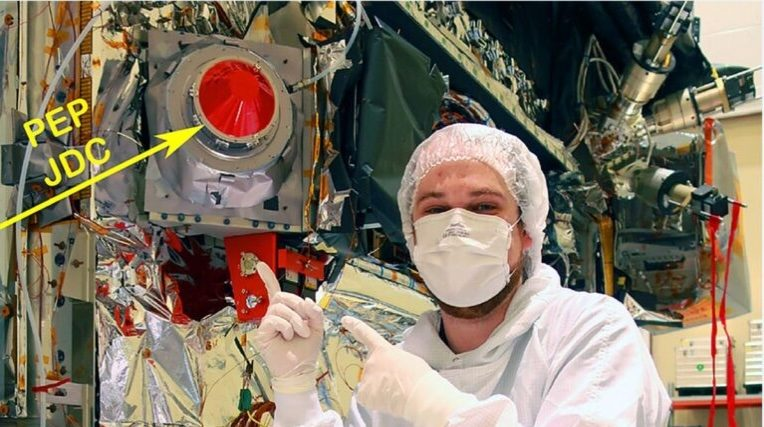
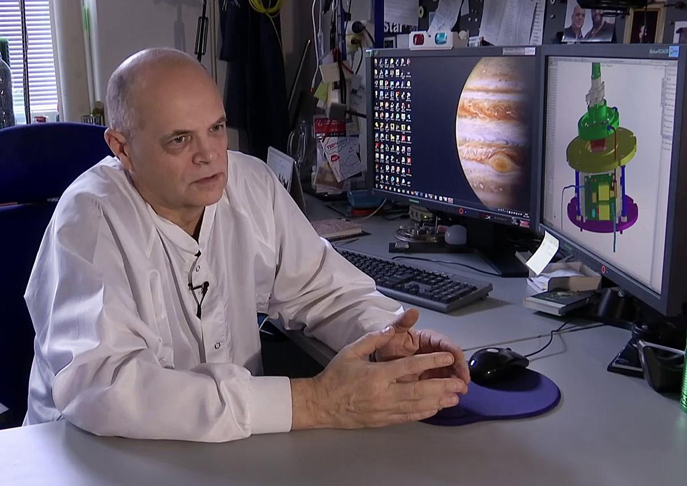
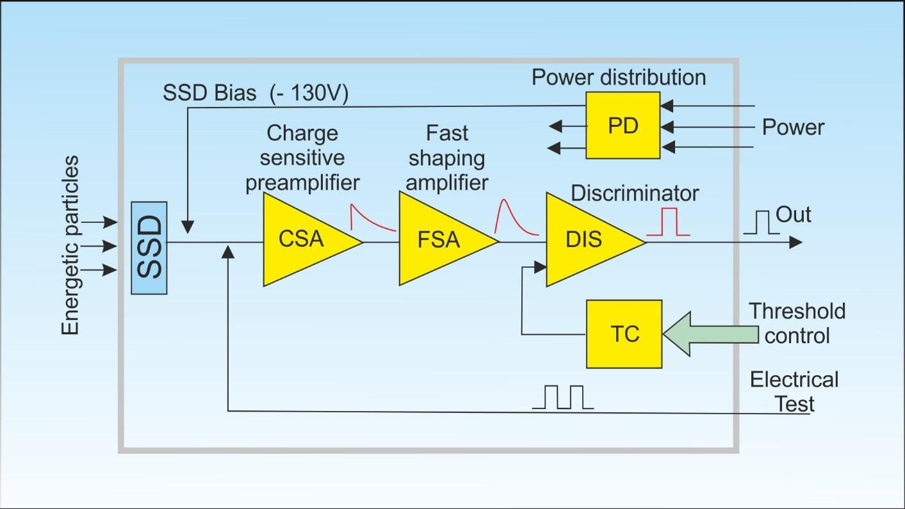
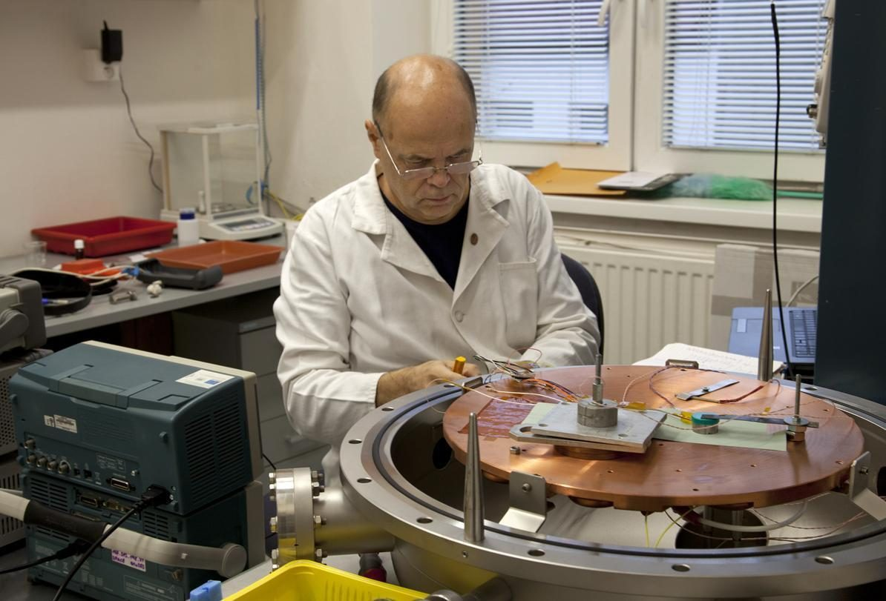
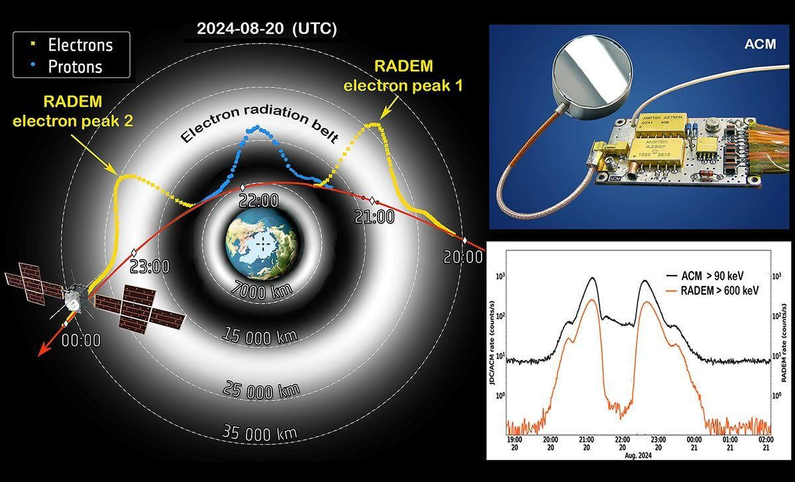

The mission
JUICE is ESA's large-class mission to Jupiter and its three ocean-bearing icy moons — Ganymede, Callisto and Europa — and to Jupiter's magnetosphere as a coupled system, the archetype for gas giants. It launched on an Ariane 5 from Kourou on 14 April 2023 and reaches Jupiter in 2031 after a cruise built from multiple gravity assists, ending in orbit around Ganymede: the only moon known to generate its own magnetic field.
At 5 AU the sunlight is weak, and the spacecraft is shaped by that fact. Its solar array covers about 85 m² and spans roughly 27 m tip to tip; the spacecraft masses 5963 kg fuelled and 2420 kg dry, and carries ten instruments. That mass and power envelope is not a footnote — it is the constraint that decides how much radiation shielding an instrument can afford.
Ganymede is a primary target because its intrinsic field meets Jupiter's. JUICE studies how that interaction modulates surface sputtering and exosphere formation, and how induced magnetic signatures constrain the depth and conductivity of the subsurface ocean. The payload is deliberately cross-linked: particle measurements constrain plasma sources and radiation, the magnetometer and radio-wave instruments constrain fields and wave–particle coupling, and remote sensing constrains surfaces and interiors. Separating a moon's intrinsic properties from external forcing requires all three at once.
The instrument we work on
The Particle Environment Package is the mission's plasma and particle suite. It measures charged-particle distributions from below 0.001 eV to above 1 MeV with full angular coverage, resolves exospheric composition at a resolving power above 1000, and feeds models of surface weathering, exosphere generation and energetic particle transport around Jupiter and its moons.
Within PEP, the Jovian plasma Dynamics and Composition analyser (JDC) measures the low- and intermediate-energy ions and electrons needed to quantify boundary crossings, plasma sources and sinks, and surface–exosphere interaction. Those are exactly the measurements that Jupiter's radiation belts threaten. Penetrating electrons deposit energy inside the sensor and appear as counts that distort low-energy distributions. Shielding attenuates the flux, but suppressing energetic electrons outright would cost more mass and geometry than any spacecraft can carry — and the shielding itself generates bremsstrahlung that reaches the detector. The remaining penetrators have to be recognised rather than blocked.

Our contribution: the Anti-Coincidence Module
We developed, verified and delivered the Anti-Coincidence Module for PEP/JDC, in collaboration with the Swedish Institute of Space Physics and the wider PEP consortium, under an ESA PECS project dedicated to the module. Ján Baláž designed it and led it through concept, verification and delivery.
ACM is not a standalone instrument. It detects penetrating radiation events and produces a fast discriminator output that lets JDC tag the measurements likely to have been corrupted by radiation-belt electrons. Its requirements are those of a timing-clean, low-latency veto source: stable discriminator behaviour across temperature, reproducible and commandable thresholds, and electrical and mechanical interfaces well enough defined that the ACM signal can be correlated with candidate science events and with independent radiation monitors during system-level tests.
We delivered three units built from space-qualified components — an engineering model, a flight model and a flight spare. All were calibrated and environmentally tested in Košice and delivered to IRF Kiruna for integration into the PEP/JDC system now flying on JUICE.

How it works
ACM pairs a silicon solid-state detector, mounted along the axis of the JDC sensor, with a dedicated analogue processing unit that amplifies, shapes and discriminates the detector signal to generate the anti-coincidence flag.
| Detector | Custom silicon SSD, 300 mm² active area, 300 µm sensitive thickness |
|---|---|
| Bias | 130 V |
| Manufacturer | Canberra Belgium Ltd., coaxial interface to the electronics |
| Front-end chain | A250F charge-sensitive amplifier → A275FN shaping amplifier → RHR801K1 fast discriminator |
| Threshold | Commandable from the JDC computer, 54–320 keV |
| Deliverables | Engineering model, flight model, flight spare |
The physics is direct. Energy loss in silicon produces one electron–hole pair per 3.6 eV, so the charge pulse scales with deposited energy: 90 keV yields about 2.5 × 10⁴ pairs, a pulse of roughly 4 fC. That sits comfortably above the front-end noise floor, which is why a threshold anywhere in the 50–300 keV range can be set robustly while leaving margin for tuning in flight. Setting it is a trade: high enough to reject electronic noise and low-energy secondaries, low enough to catch the penetrating component, and never so aggressive that veto dead-time eats real events.

Verification
We calibrated the detector response and discriminator behaviour in our laboratories in Košice using mono-energetic electrons from ¹⁰⁹Cd and gamma radiation from ²⁴¹Am, establishing traceable pre-flight performance references. Environmental verification included thermal-vacuum testing in the SPACEVAC chamber at IEP SAS — the same chamber that now stands in our space cleanroom — after which the units went to IRF Kiruna for integration and system-level acceptance in the PEP/JDC chain.
Ground testing quantifies trigger efficiency, timing jitter and the correlation between ACM pulses and science-event candidates. What it cannot supply is a real trapped-particle spectrum.

First proof in flight
PEP was commissioned in cruise in June 2023 and operates nominally. The test that mattered for ACM came with JUICE's Moon–Earth gravity assist of 20 August 2024, which carried the spacecraft through Earth's outer Van Allen belt — an environment rich in exactly the energetic trapped electrons ACM exists to recognise.
It performed its intended function. Through the belt transits ACM reliably registered penetrating energetic electrons and their secondary products deep inside the PEP instrument volume, and cross-calibration against JUICE's own Radiation Environment Monitor (RADEM, covering electrons 0.3–40 MeV and protons 5–250 MeV) confirmed the correspondence. ACM ran at a single 90 keV threshold during the flyby; a scan across the full commandable 54–320 keV range is planned for a future Earth flyby, to refine the calibration against different radiation spectra.
This is a systems verification rather than a component test. It validates the whole chain — detector signal, analogue shaping and discrimination, instrument timing context, and comparison against an independent monitor — in a real radiation belt rather than a laboratory irradiation.

Why it matters for the science
ACM earns its place in the downstream data. By tagging the intervals likely to contain radiation hits, JDC preserves the true low-energy plasma distributions that PEP was built to resolve: magnetosphere–moon coupling, boundary crossings, and the time-variable acceleration processes at Ganymede and in Jupiter's magnetosphere. Modelling also shows that spacecraft charging can distort JDC's effective field of view for ions in Jovian and Ganymede conditions, which makes clean tagging of contamination events valuable for data screening and uncertainty management.
Early cruise and flyby data mainly support calibration and performance reporting. The primary scientific literature follows once JUICE enters the Jupiter system and sustained PEP operations produce statistically rich datasets under radiation conditions far stronger than anything the cruise has offered.
Data and access
JUICE data are archived in ESA's Planetary Science Archive, the long-term repository for ESA Solar System mission products. The JUICE archive runs as an operational archive: data can be ingested early while pipelines, calibration tables and documentation mature through commissioning and cruise, so product versions and updates are tracked explicitly.
That traceability matters for anything ACM touches. Particle and field datasets follow PDS4 metadata conventions, so instrument mode, threshold values, timing windows and veto semantics travel with the data — which is what lets a user years from now reproduce a screening step or compare products across epochs.
ESA Planetary Science Archive →
People
Ing. Ján Baláž, PhD. — ACM design, verification and delivery.